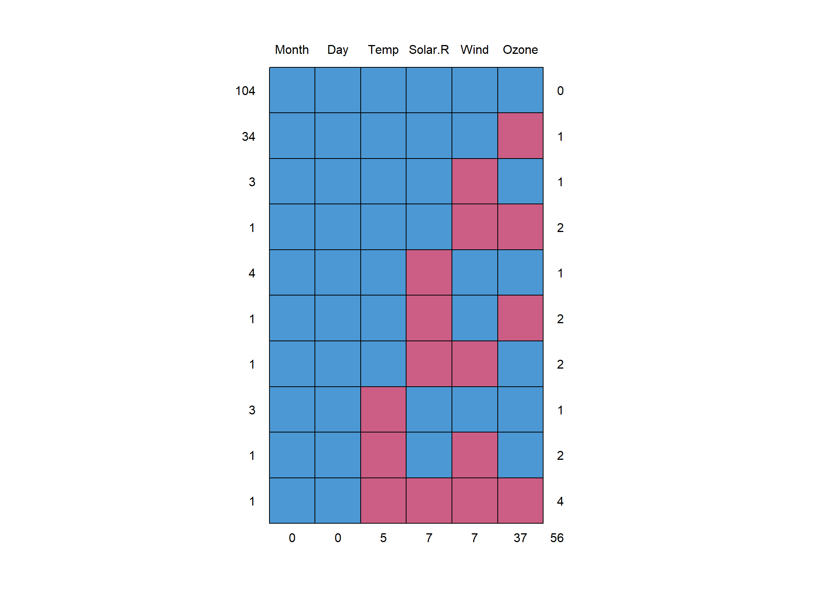
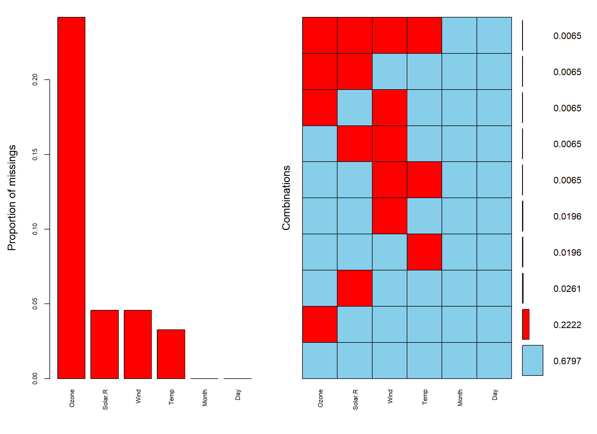
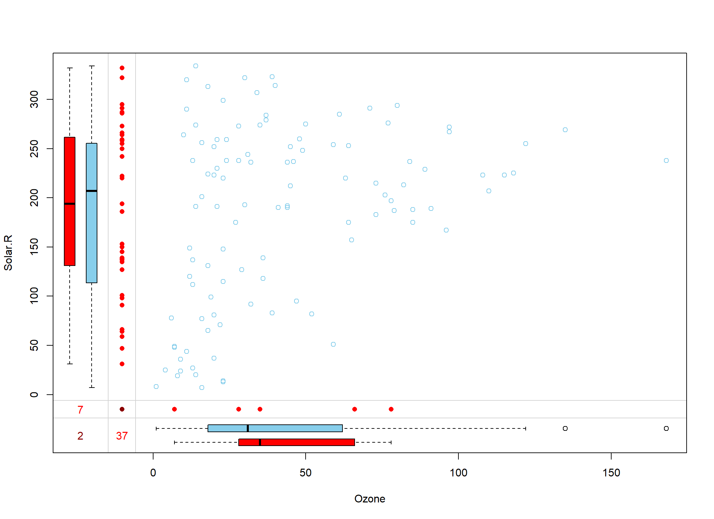
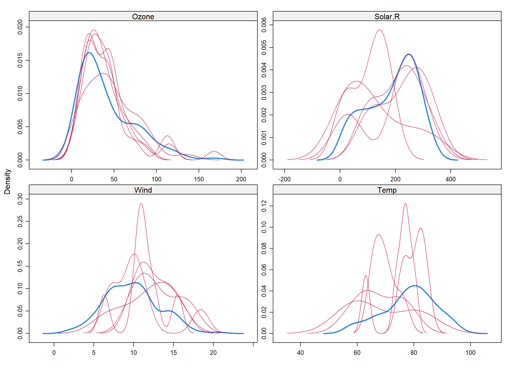
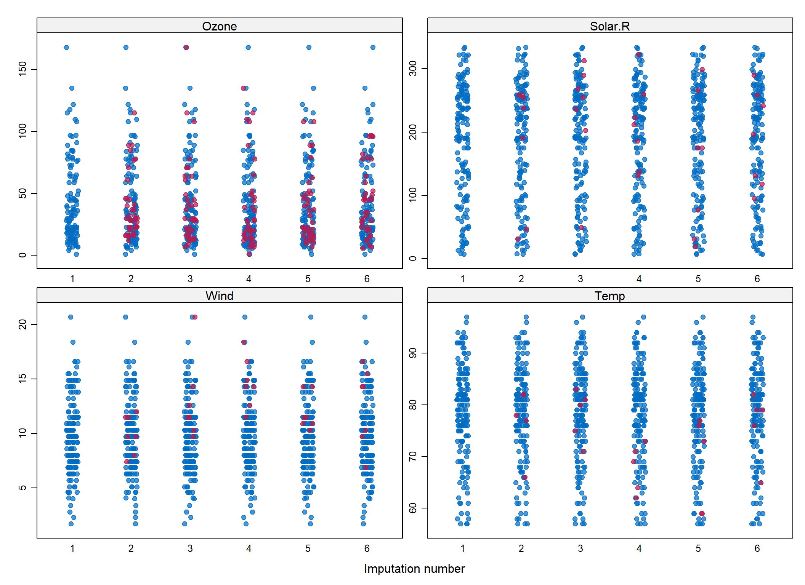

2 Przygotowanie danych
2.1 Korekta zbioru danych
Dane, które importujemy z zewnętrznego źródła najczęściej nie spełniają formatów obowiązujących w R. Często zmienne zawierają niedopuszczalne znaki szczególne, odstępy w nazwach, powtórzone nazwy kolumn, nazwy zmiennych zaczynające się od liczby, czy puste wiersze lub kolumny. Przed przystąpieniem do analizy zbioru należy rozważyć ewentualne poprawki nazw zmiennych, czy usunięcie pustych kolumn i wierszy. Niektórych czynności można dokonać już na etapie importu danych, stosując pewne pakiety oraz nowe funkcjonalności środowiska RStudio. W większości przypadków uchroni nas to od żmudnego przekształcania typów zmiennych. Oczywiście wszystkie te czynności czyszczenia danych można również dokonać już po imporcie danych, za pomocą odpowiednich komend R.
## przykładowe niepożądane nazwy zmiennych
test_df <- as.data.frame(matrix(rnorm(18),ncol = 6))
names(test_df) <- c("hIgHlo", "REPEAT VALUE", "REPEAT VALUE",
"% successful (2009)", "abc@!*", "")
test_df## hIgHlo REPEAT VALUE REPEAT VALUE % successful (2009) abc@!*
## 1 -0.9546709 0.1552327 -1.9070184 1.0976691 0.9381296
## 2 0.2515073 1.5496371 -0.3919635 -0.8297448 -1.3222560
## 3 -0.1100726 -0.5823125 2.2131383 -1.2403419 -1.9700163
##
## 1 -1.5336062
## 2 1.3299777
## 3 -0.8424698## do poprawy nazw zmiennych użyjemy funkcji make.names
names(test_df) <- make.names(names(test_df))
test_df## hIgHlo REPEAT.VALUE REPEAT.VALUE X..successful..2009. abc...
## 1 -0.9546709 0.1552327 -1.9070184 1.0976691 0.9381296
## 2 0.2515073 1.5496371 -0.3919635 -0.8297448 -1.3222560
## 3 -0.1100726 -0.5823125 2.2131383 -1.2403419 -1.9700163
## X
## 1 -1.5336062
## 2 1.3299777
## 3 -0.8424698Efekt końcowy choć skuteczny to nie jest zadowalający. Czyszczenia nazw zmiennych można też dokonać stosując funkcję clean_names pakietu janitor (Firke 2018). Pozwala on również na usuwanie pustych wierszy i kolumn, znajdowanie zduplikowanych rekordów, itp.
library(janitor)
test_df %>% # aby na stałe zmienić nazwy zmiennych trzeba podstawienia
clean_names()## h_ig_hlo repeat_value repeat_value_2 x_successful_2009 abc
## 1 -0.9546709 0.1552327 -1.9070184 1.0976691 0.9381296
## 2 0.2515073 1.5496371 -0.3919635 -0.8297448 -1.3222560
## 3 -0.1100726 -0.5823125 2.2131383 -1.2403419 -1.9700163
## x
## 1 -1.5336062
## 2 1.3299777
## 3 -0.8424698# przykładowe dane
x <- data.frame(w1=c(1,4,2,NA),w2=c(NA,2,3,NA), w3=c(1,NA,1,NA))
x## w1 w2 w3
## 1 1 NA 1
## 2 4 2 NA
## 3 2 3 1
## 4 NA NA NAx %>% remove_empty("rows")## w1 w2 w3
## 1 1 NA 1
## 2 4 2 NA
## 3 2 3 12.1.1 Identyfikacja braków danych
Zanim usuniemy jakiekolwiek braki w zbiorze, powinniśmy je najpierw zidentyfikować, określić ich charakter, a dopiero potem ewentualnie podjąć decyzję o uzupełnianiu braków.
algae <- rio::import("data/algae.csv")
# najprościej jest wywołać summary
summary(algae)## season size speed mxPH
## Length:200 Length:200 Length:200 Min. :5.600
## Class :character Class :character Class :character 1st Qu.:7.700
## Mode :character Mode :character Mode :character Median :8.060
## Mean :8.012
## 3rd Qu.:8.400
## Max. :9.700
## NA's :1
## mnO2 Cl NO3 NH4
## Min. : 1.500 Min. : 0.222 Min. : 0.050 Min. : 5.00
## 1st Qu.: 7.725 1st Qu.: 10.981 1st Qu.: 1.296 1st Qu.: 38.33
## Median : 9.800 Median : 32.730 Median : 2.675 Median : 103.17
## Mean : 9.118 Mean : 43.636 Mean : 3.282 Mean : 501.30
## 3rd Qu.:10.800 3rd Qu.: 57.824 3rd Qu.: 4.446 3rd Qu.: 226.95
## Max. :13.400 Max. :391.500 Max. :45.650 Max. :24064.00
## NA's :2 NA's :10 NA's :2 NA's :2
## oPO4 PO4 Chla a1
## Min. : 1.00 Min. : 1.00 Min. : 0.200 Min. : 0.00
## 1st Qu.: 15.70 1st Qu.: 41.38 1st Qu.: 2.000 1st Qu.: 1.50
## Median : 40.15 Median :103.29 Median : 5.475 Median : 6.95
## Mean : 73.59 Mean :137.88 Mean : 13.971 Mean :16.92
## 3rd Qu.: 99.33 3rd Qu.:213.75 3rd Qu.: 18.308 3rd Qu.:24.80
## Max. :564.60 Max. :771.60 Max. :110.456 Max. :89.80
## NA's :2 NA's :2 NA's :12
## a2 a3 a4 a5
## Min. : 0.000 Min. : 0.000 Min. : 0.000 Min. : 0.000
## 1st Qu.: 0.000 1st Qu.: 0.000 1st Qu.: 0.000 1st Qu.: 0.000
## Median : 3.000 Median : 1.550 Median : 0.000 Median : 1.900
## Mean : 7.458 Mean : 4.309 Mean : 1.992 Mean : 5.064
## 3rd Qu.:11.375 3rd Qu.: 4.925 3rd Qu.: 2.400 3rd Qu.: 7.500
## Max. :72.600 Max. :42.800 Max. :44.600 Max. :44.400
##
## a6 a7
## Min. : 0.000 Min. : 0.000
## 1st Qu.: 0.000 1st Qu.: 0.000
## Median : 0.000 Median : 1.000
## Mean : 5.964 Mean : 2.495
## 3rd Qu.: 6.925 3rd Qu.: 2.400
## Max. :77.600 Max. :31.600
## ## wyświetl niekompletne wiersze
algae[!complete.cases(algae),] %>% head()## season size speed mxPH mnO2 Cl NO3 NH4 oPO4 PO4 Chla a1 a2 a3
## 28 autumn small high 6.8 11.1 9.00 0.630 20 4.0 NA 2.7 30.3 1.9 0.0
## 38 spring small high 8.0 NA 1.45 0.810 10 2.5 3.0 0.3 75.8 0.0 0.0
## 48 winter small low NA 12.6 9.00 0.230 10 5.0 6.0 1.1 35.5 0.0 0.0
## 55 winter small high 6.6 10.8 NA 3.245 10 1.0 6.5 NA 24.3 0.0 0.0
## 56 spring small medium 5.6 11.8 NA 2.220 5 1.0 1.0 NA 82.7 0.0 0.0
## 57 autumn small medium 5.7 10.8 NA 2.550 10 1.0 4.0 NA 16.8 4.6 3.9
## a4 a5 a6 a7
## 28 0.0 2.1 1.4 2.1
## 38 0.0 0.0 0.0 0.0
## 48 0.0 0.0 0.0 0.0
## 55 0.0 0.0 0.0 0.0
## 56 0.0 0.0 0.0 0.0
## 57 11.5 0.0 0.0 0.0## policz niekompletne wiersze
nrow(algae[!complete.cases(algae),])## [1] 16## sprawdzenie liczby braków w wierszach
apply(algae, 1, function(x) sum(is.na(x)))## 1 2 3 4 5 6 7 8 9 10 11 12 13 14 15 16 17 18
## 0 0 0 0 0 0 0 0 0 0 0 0 0 0 0 0 0 0
## 19 20 21 22 23 24 25 26 27 28 29 30 31 32 33 34 35 36
## 0 0 0 0 0 0 0 0 0 1 0 0 0 0 0 0 0 0
## 37 38 39 40 41 42 43 44 45 46 47 48 49 50 51 52 53 54
## 0 1 0 0 0 0 0 0 0 0 0 1 0 0 0 0 0 0
## 55 56 57 58 59 60 61 62 63 64 65 66 67 68 69 70 71 72
## 2 2 2 2 2 2 2 6 1 0 0 0 0 0 0 0 0 0
## 73 74 75 76 77 78 79 80 81 82 83 84 85 86 87 88 89 90
## 0 0 0 0 0 0 0 0 0 0 0 0 0 0 0 0 0 0
## 91 92 93 94 95 96 97 98 99 100 101 102 103 104 105 106 107 108
## 0 0 0 0 0 0 0 0 0 0 0 0 0 0 0 0 0 0
## 109 110 111 112 113 114 115 116 117 118 119 120 121 122 123 124 125 126
## 0 0 0 0 0 0 0 1 0 0 0 0 0 0 0 0 0 0
## 127 128 129 130 131 132 133 134 135 136 137 138 139 140 141 142 143 144
## 0 0 0 0 0 0 0 0 0 0 0 0 0 0 0 0 0 0
## 145 146 147 148 149 150 151 152 153 154 155 156 157 158 159 160 161 162
## 0 0 0 0 0 0 0 0 0 0 0 0 0 0 0 0 1 0
## 163 164 165 166 167 168 169 170 171 172 173 174 175 176 177 178 179 180
## 0 0 0 0 0 0 0 0 0 0 0 0 0 0 0 0 0 0
## 181 182 183 184 185 186 187 188 189 190 191 192 193 194 195 196 197 198
## 0 0 0 1 0 0 0 0 0 0 0 0 0 0 0 0 0 0
## 199 200
## 6 0Wiele ciekawych funkcji do eksploracji danych znajduje się w pakiecie DMwR (Torgo 2013), który został przygotowany przy okacji publikacji książki Data Mining with R.
## poszukiwanie wierszy zawierających wiele braków
## w tym przypadku próg wyświetlania ustawiony jest na 0.2
## czyli 20% wszystkich kolumn
library(DMwR)
manyNAs(algae)## 62 199
## 62 199## tworzenie zbioru pozbawionego wierszy zawierających wiele braków
algae2 <- algae[-manyNAs(algae), ]
## sprawdzamy liczbę wybrakowanych wierszy które pozostały
nrow(algae2[!complete.cases(algae2),])## [1] 14## usuwamy wszystkie wiersze z brakami
algae3 <- na.omit(algae)
## wyświetl wiersze z brakami
algae3[!complete.cases(algae3),] %>% head()## [1] season size speed mxPH mnO2 Cl NO3 NH4 oPO4 PO4
## [11] Chla a1 a2 a3 a4 a5 a6 a7
## <0 rows> (or 0-length row.names)## liczba pozostałych wybrakowanych wierszy
nrow(algae3[!complete.cases(algae3),])## [1] 0## można oczywiście też ręcznie usuwać wiersze (nie polecam)
algae4 <- algae[-c(62,199),]Można też zbudować funkcję, która będzie usuwała braki danych wg naszego upodobania.
## najpierw budujemy funkcję i ją kompilujemy aby R mógł ja stosować
## parametr prog ustala próg odcięcia wierszy
czysc.dane <- function(dt, prog = 0){
licz.braki <- apply(dt, 1, function(x) sum(is.na(x)))
czyste.dt <- dt[!(licz.braki/ncol(dt)>prog), ]
return(czyste.dt)
}
## potem ją możemy stosować
algae4 <- czysc.dane(algae)
nrow(algae4[!complete.cases(algae4),])## [1] 0## czyścimy wiersze, których liczba braków przekracza 20% wszystkich kolumn
algae5 <- czysc.dane(algae, prog = 0.2)
nrow(algae5[!complete.cases(algae5),])## [1] 14Bardzo ciekawym narzędziem do znajdowania braków danych jest funkcja md.pattern pakietu mice (van Buuren and Groothuis-Oudshoorn 2018). Wskazuje on ile braków występuje w ramach każdej zmiennej.
library(mice)
md.pattern(algae)Figure 2.1: Na czerwono zaznaczone są zmienne, które zwierają braki danych. Liczba w wierszu po lewej stronie wykresu wskazuje ile wierszy w bazie ma daną charakterystykę, a liczba po prawej oznacza ile zmiennych było wybrakowanych
## season size speed a1 a2 a3 a4 a5 a6 a7 mxPH mnO2 NO3 NH4 oPO4 PO4 Cl
## 184 1 1 1 1 1 1 1 1 1 1 1 1 1 1 1 1 1
## 3 1 1 1 1 1 1 1 1 1 1 1 1 1 1 1 1 1
## 1 1 1 1 1 1 1 1 1 1 1 1 1 1 1 1 1 0
## 7 1 1 1 1 1 1 1 1 1 1 1 1 1 1 1 1 0
## 1 1 1 1 1 1 1 1 1 1 1 1 1 1 1 1 0 1
## 1 1 1 1 1 1 1 1 1 1 1 1 1 0 0 0 0 0
## 1 1 1 1 1 1 1 1 1 1 1 1 0 1 1 1 1 1
## 1 1 1 1 1 1 1 1 1 1 1 1 0 0 0 0 1 0
## 1 1 1 1 1 1 1 1 1 1 1 0 1 1 1 1 1 1
## 0 0 0 0 0 0 0 0 0 0 1 2 2 2 2 2 10
## Chla
## 184 1 0
## 3 0 1
## 1 1 1
## 7 0 2
## 1 1 1
## 1 0 6
## 1 1 1
## 1 0 6
## 1 1 1
## 12 332.1.2 Zastępowanie braków danych
Zastępowanie braków danych (zwane także imputacją danych) jest kolejnym etapem procesu przygotowania danych do analiz. Nie można jednak wyróżnić uniwersalnego sposobu zastępowania braków dla wszystkich możliwych sytuacji. Wśród statystków panuje przekonanie, że w przypadku wystąpienia braków danych można zastosować trzy strategie:
- nic nie robić z brakami - co wydaje się niedorzeczne ale wcale takie nie jest, ponieważ istnieje wiele modeli statystycznych (np. drzewa decyzyjne), które świetnie radzą sobie w sytuacji braków danych. Niestety nie jest to sposób, który można stosować zawsze, ponieważ są również modele wymagające kompletności danych jak na przykład sieci neuronowe.
- usuwać braki wierszami11 - to metoda, która jest stosowana domyślnie w przypadku kiedy twórca modelu nie zadecyduje o innym sposobie obsługi luk. Metoda ta ma swoją niewątpliwą zaletę w postaci jasnej i prostej procedury, ale szczególnie w przypadku niewielkich zbiorów może skutkować obciążeniem estymatorów. Nie wiemy bowiem jaka wartość faktycznie jest przypisana danej cesze. Jeśli jest to wartość bliska np. średniej, to nie wpłynie znacząco na obciążenie estymatora wartości oczekiwanej. W przypadku, gdy różni się ona znacznie od średniej tej cechy, to estymator może już wykazywać obciążenie. Jego wielkość zależy również od liczby usuniętych elementów. Nie jest zalecane usuwanie wielu wierszy ze zbioru danych i na podstawie okrojonego zbioru wyciąganie wniosków o populacji, ponieważ próba jest wówczas znacząco inna niż populacja. Dodatkowo jeśli estymatory są wyznaczane na podstawie zbioru wyraźnie mniej licznego, to precyzja estymatorów wyrażona wariancją spada. Reasumując, jeśli liczba wierszy z brakującymi danymi jest niewielka w stosunku do całego zbioru, to usuwanie wierszy jest sensownym rozwiązaniem.
- uzupełnianie braków - to procedura polegająca na zastępowaniu braków różnymi technikami. Jej niewątpliwą zaletą jest fakt posiadania kompletnych danych bez koniczności usuwania wierszy. Niestety wiąże się to również z pewnymi wadami. Zbiór posiadający wiele braków uzupełninych nawet bardzo wyrafinowanymi metodami może cechować się zaniżoną wariancją poszczególnych cech oraz tzw. przeuczeniem12.
- Uzupełnianie średnią - braki w zakresie danej zmiennej uzupełniamy średnią tej zmiennej przypadków uzupełnionych.
algae[is.na(algae$mxPH), ]## season size speed mxPH mnO2 Cl NO3 NH4 oPO4 PO4 Chla a1 a2 a3 a4 a5
## 48 winter small low NA 12.6 9 0.23 10 5 6 1.1 35.5 0 0 0 0
## a6 a7
## 48 0 0m <- mean(algae$mxPH, na.rm = T)
algae[is.na(algae$mxPH), "mxPH"] <- m
algae[is.na(algae$mxPH), ]## [1] season size speed mxPH mnO2 Cl NO3 NH4 oPO4 PO4
## [11] Chla a1 a2 a3 a4 a5 a6 a7
## <0 rows> (or 0-length row.names)- Uzupełnianie medianą - braki w zakresie danej zmiennej uzupełniamy medianą tej zmiennej przypadków uzupełnionych.
algae %>% filter(is.na(Chla)) %>% head## season size speed mxPH mnO2 Cl NO3 NH4 oPO4 PO4 Chla a1 a2 a3
## 1 winter small high 6.6 10.8 NA 3.245 10 1 6.5 NA 24.3 0.0 0.0
## 2 spring small medium 5.6 11.8 NA 2.220 5 1 1.0 NA 82.7 0.0 0.0
## 3 autumn small medium 5.7 10.8 NA 2.550 10 1 4.0 NA 16.8 4.6 3.9
## 4 spring small high 6.6 9.5 NA 1.320 20 1 6.0 NA 46.8 0.0 0.0
## 5 summer small high 6.6 10.8 NA 2.640 10 2 11.0 NA 46.9 0.0 0.0
## 6 autumn small medium 6.6 11.3 NA 4.170 10 1 6.0 NA 47.1 0.0 0.0
## a4 a5 a6 a7
## 1 0.0 0 0.0 0
## 2 0.0 0 0.0 0
## 3 11.5 0 0.0 0
## 4 28.8 0 0.0 0
## 5 13.4 0 0.0 0
## 6 0.0 0 1.2 0algae[is.na(algae$Chla), "Chla"] <- median(algae$Chla, na.rm = T)- Wypełnianie zmiennych typu wyliczeniowego, logicznego lub znakowego odbywa się najczęściej przez dobranie w miejsce brakującej wartości, elementu powtarzającego się najczęściej wśród obiektów obserwowanych. W pakiecie DMwR istnieje funkcja
centralImputation, która wypełnia braki wartością centralną (w przypadku zmiennych typu liczbowego - medianą, a dla wartości logicznych, wyliczeniowych lub tekstowych - modą).
algae[48, "season"]## [1] "winter"algae[48, "season"] <- NA
algae.uzup <- centralImputation(algae)
algae.uzup[48,]## season size speed mxPH mnO2 Cl NO3 NH4 oPO4 PO4 Chla a1 a2 a3
## 48 winter small low 8.011734 12.6 9 0.23 10 5 6 1.1 35.5 0 0
## a4 a5 a6 a7
## 48 0 0 0 0- Jeszcze innym sposobem imputacji danych są algorytmy oparte o metodę \(k\)-najbliższych sąsiadów. Algorytm opiera się na prostej zasadzie, uzupełniania brakujących wartości medianą (w przypadku zmiennych ilościowych) lub modą (w przypadku zmiennych jakościowych) elementów, które są \(k\)-tymi najbliższymi sąsiadami w metryce \[\begin{equation}\label{knn} d(x,y)=\sqrt{\sum_{i=1}^{p}\delta_i(x_i,y_i)}, \end{equation}\] gdzie \(\delta_i\) jest odległością pomiędzy dwoma elementami ze względu na \(i\)-tą cech, określoną następująco \[\begin{equation}\label{metryka} \delta_i(v_1, v_2)=\begin{cases} 1,& \text{jeśli zmienna jest jakościowa i }v_1\neq v_2\\ 0,& \text{jeśli zmienna jest jakościowa i }v_1=v_2\\ (v_1-v_2)^2,& \text{jeśli zmienna jest ilościowa.} \end{cases} \end{equation}\] Odległości są mierzone dla zmiennych standaryzowanych. Istnieje też odmiana z wagami, które maleją wraz ze wzrostem odległości pomiędzy sąsiadem a uzupełnianym elementem (np. \(w(d)=\exp(d)\)).
algae[48, ]## season size speed mxPH mnO2 Cl NO3 NH4 oPO4 PO4 Chla a1 a2 a3
## 48 <NA> small low 8.011734 12.6 9 0.23 10 5 6 1.1 35.5 0 0
## a4 a5 a6 a7
## 48 0 0 0 0algae <- algae %>%
mutate_if(is.character, as.factor)
algae.uzup <- knnImputation(algae, k = 5, scale = F, meth = "median")
algae.uzup[48,]## season size speed mxPH mnO2 Cl NO3 NH4 oPO4 PO4 Chla a1 a2 a3
## 48 summer small low 8.011734 12.6 9 0.23 10 5 6 1.1 35.5 0 0
## a4 a5 a6 a7
## 48 0 0 0 0Istnieją również dużo bardziej złożone algorytmy imputacji danych oparte na bardziej wyrafinowanych technikach, takich jak: predykcja modelami liniowymi, nieliniowymi, analiza dyskryminacyjna, drzewa klasyfikacyjne. Dwa najbardziej znane pakiety zawierające funkcje do imputacji w sposób złożony, to Amelia i mice.
Imputacja danych z zastosowaniem pakietu mice wymaga podjęcia kilku decyzji przed przystąpieniem do uzupełniania danych:
- Czy dane są MAR (ang. Missing At Random) czy MNAR (ang. Missing Not At Random), co oznacza, że musimy się zastanowić jakie mogły być źródła braków danych, przypadkowe czy systematyczne?
- Należy się zdecydować na formę imputacji, określając strukturę zależności pomiędzy cechami oraz rozkład błędu danej cechy?
- Wybrać zbiór danych, który posłuży nam za predyktory w imputacji (nie mogą zawierać braków).
- Określenie, które niepełne zmienne są funkcjami innych wybrakowanych zmiennych.
- Określić w jakiej kolejności dane będą imputowane.
- Określić parametry startowe imputacji (liczbę iteracji, warunek zbieżności).
- Określić liczę imputowanych zbiorów.
Ad 1. Wyróżniamy nastepujące rodzaje braków danych: - MCAR (ang. Missing Completely At Random) - z definicji to braki, których pojawienie się jest kompletnie losowe. Przykładowo gdy osoba poproszona o wypełnienie wieku w ankiecie będzie rzucać monetą czy wypełnić tą zmienną. - MAR - oznacza, że obserwowane wartości i wybrakowane mają inne rozkłady ale da się je oszacować na podstawie danych obserwowanych. Przykładowo ciśnienie tętnicze u osób, które nie wypełniły tej wartości jest wyższe niż u osób, które wpisały swoje ciśnienie. Okazuje się, że osoby starsze z nadciśnieniem nie wypełniały ankiety w tym punkcie. - MNAR - jeśli nie jest spełniony warunek MCAR i MAR, wówczas brak ma charakter nielosowy. Przykładowo respondenci osiągający wyższe zarobki sukcesywnie nie wypełniają pola “zarobki” i dodatkowo nie ma w ankiecie zmiennych, które pozwoliłyby nam ustalić, jakie to osoby.
Ad 2. Decyzja o algorytmie imputacji wynika bezpośrednio ze skali w jakiej jest mierzona dana zmienna. Ze względu na rodzaj cechy używać będziemy następujących metod:
| method | type | description |
|---|---|---|
| pmm | any | Predictive.mean.matching |
| midastouch | any | Weighted predictive mean matching |
| sample | any | Random sample from observed values |
| cart | any | Classification and regression trees |
| rf | any | Random forest imputations |
| mean | numeric | Unconditional mean imputation |
| norm | numeric | Bayesian linear regression |
| norm.nob | numeric | Linear regression ignoring model error |
| norm.boot | numeric | Linear regression using bootstrap |
| norm.predict | numeric | Linear regression, predicted values |
| quadratic | numeric | Imputation of quadratic terms |
| ri | numeric | Random indicator for nonignorable data |
| logreg | binary | Logistic regression |
| logreg.boot | binary | Logistic regression with bootstrap |
| polr | ordered | Proportional odds model |
| polyreg | unordered | Polytomous logistic regression |
| lda | unordered | Linear discriminant analysis |
| 2l.norm | numeric | Level-1 normal heteroscedastic |
| 2l.lmer | numeric | Level-1 normal homoscedastic, |
| lmer | ||
| 2l.pan | numeric | Level-1 normal homoscedastic, pan |
| 2l.bin | binary | Level-1 logistic, glmer |
| 2lonly.mean | numeric | Level-2 class mean |
| 2lonly.norm | numeric | Level-2 class normal |
| 2lonly.pmm | any | Level-2 class predictive mean matching |
Każdy z czterech typów danych ma swój domyślny algorytm przeznaczony do imputacji:
- zmienna ilościowa - pmm
- zmienna dychotomiczna (stany 0 lub 1) - logreg
- zmienna typu wyliczeniowego (nieuporządkowana) - polyreg
- zmienna typu wyliczeniowego (uporządkowana) - polr
Niewątpliwą zaletą metody pmm jest to, że wartości imputowane są ograniczone jedynie do obserwowanych wartości. Metody norm i norm.nob uzupełniają brakujące wartości w oparciu o model liniowy. Są one szybkie i efektywne w przypadku gdy reszty modelu są zbliżone rozkładem do normalności. Druga z tych technik nie bierze pod uwagę niepewności związanej z modelem imputującym. Metoda 2L.norm opiera się na dwupoziomowym heterogenicznym modelu liniowym (skupienia są włączone jako efekt do modelu). Technika polyreg korzysta z funkcji multinom pakietu nnet tworzącej model wielomianowy. polr opiera się o proporcjonalny model logitowy z pakietu MASS. lda to model dyskryminacyjny klasyfikujący obiekty na podstawie prawdopodobieństw a posteriori. Metoda sample zastępuje braki losowa wybranymi wartościami spośród wartości obserwowanych.
Ad 3. Do ustalenia predyktorów w modelu mice służy funkcja predictorMatrix. Po pierwsze wyświetla ona domyślny układ predyktorów włączanych do modelu. Można go dowolnie zmienić i podstawić do modelu imputującego dane parametrem predictorMatrix. Zera występujące w kolejnych wierszach macierzy predyktorów oznaczają pominięcie tej zmiennej przy imputacji innej zmiennej. Jeśli dodatkowo chcemy by jakaś zmienna nie była imputowana, to oprócz usunięcia jej z listy predyktorów, należy wymazać ją z listy metod predykcji (method).
Ogólne zalecenia co do tego jakie zmienne stosować jako predyktory jest takie, żeby brać ich jak najwięcej. Spowoduje to, że bardziej prawdopodobny staje się brak typu MAR a nie MNAR. Z drugiej jednak strony, nierzadko zbiory zawierają olbrzymią liczbę zmiennych i włączanie ich wszystkich do modelu imputującego nie będzie miało sensu.
Zalecenia doboru zmiennych są następujące: - weź wszystkie te zmienne, które są włączane do modelu właściwego, czyli tego za pomocą którego chcesz poznać strukturę zależności; - czasem do modelu imputującego należy też włączyć interakcje zmiennych z modelu właściwego; - dodaj zmienne, które mogą mieć wpływ na wybrakowane cechy; - włącz zmienne istotnie podnoszące poziom wyjaśnionej wariancji modelu; - na koniec usuń te zmienne spośród predyktorów, które same zawierają zbyt wiele braków.
Ad 4-7. Decyzje podejmowane w tych punktach zależą istotnie od analizowanego zbioru i będą przedmiotem oddzielnych analiz w kontekście rozważanych zbiorów i zadań.
2.2 Przykład
Dokonamy imputacji zbioru airquality z wykorzystaniem pakietów mice i VIM (Templ et al. 2019)
data <- airquality
summary(data)## Ozone Solar.R Wind Temp
## Min. : 1.00 Min. : 7.0 Min. : 1.700 Min. :56.00
## 1st Qu.: 18.00 1st Qu.:115.8 1st Qu.: 7.400 1st Qu.:72.00
## Median : 31.50 Median :205.0 Median : 9.700 Median :79.00
## Mean : 42.13 Mean :185.9 Mean : 9.958 Mean :77.88
## 3rd Qu.: 63.25 3rd Qu.:258.8 3rd Qu.:11.500 3rd Qu.:85.00
## Max. :168.00 Max. :334.0 Max. :20.700 Max. :97.00
## NA's :37 NA's :7
## Month Day
## Min. :5.000 Min. : 1.0
## 1st Qu.:6.000 1st Qu.: 8.0
## Median :7.000 Median :16.0
## Mean :6.993 Mean :15.8
## 3rd Qu.:8.000 3rd Qu.:23.0
## Max. :9.000 Max. :31.0
## # tworzymy dodatkowe braki danych
data[4:10,3] <- rep(NA,7)
data[1:5,4] <- NA
summary(data)## Ozone Solar.R Wind Temp
## Min. : 1.00 Min. : 7.0 Min. : 1.700 Min. :57.00
## 1st Qu.: 18.00 1st Qu.:115.8 1st Qu.: 7.400 1st Qu.:73.00
## Median : 31.50 Median :205.0 Median : 9.700 Median :79.00
## Mean : 42.13 Mean :185.9 Mean : 9.806 Mean :78.28
## 3rd Qu.: 63.25 3rd Qu.:258.8 3rd Qu.:11.500 3rd Qu.:85.00
## Max. :168.00 Max. :334.0 Max. :20.700 Max. :97.00
## NA's :37 NA's :7 NA's :7 NA's :5
## Month Day
## Min. :5.000 Min. : 1.0
## 1st Qu.:6.000 1st Qu.: 8.0
## Median :7.000 Median :16.0
## Mean :6.993 Mean :15.8
## 3rd Qu.:8.000 3rd Qu.:23.0
## Max. :9.000 Max. :31.0
## md.pattern(data)
## Month Day Temp Solar.R Wind Ozone
## 104 1 1 1 1 1 1 0
## 34 1 1 1 1 1 0 1
## 3 1 1 1 1 0 1 1
## 1 1 1 1 1 0 0 2
## 4 1 1 1 0 1 1 1
## 1 1 1 1 0 1 0 2
## 1 1 1 1 0 0 1 2
## 3 1 1 0 1 1 1 1
## 1 1 1 0 1 0 1 2
## 1 1 1 0 0 0 0 4
## 0 0 5 7 7 37 56Do ilustracji braków danych można zastosować funkcje pakietu VIM.
library(VIM)
aggr(data, numbers=TRUE,
sortVars=TRUE,
labels=names(data),
cex.axis=.7)
##
## Variables sorted by number of missings:
## Variable Count
## Ozone 0.24183007
## Solar.R 0.04575163
## Wind 0.04575163
## Temp 0.03267974
## Month 0.00000000
## Day 0.00000000Tak przedstawia się wykres rozrzutu zmiennych Ozone i Solar.R z uwzględnieniem położenia braków danych.
marginplot(data[c(1,2)])
Dokonamy imputacji metodą pmm.
tempData <- mice(data,
maxit=50,
meth='pmm',
seed=44,
printFlag = F)
summary(tempData)## Class: mids
## Number of multiple imputations: 5
## Imputation methods:
## Ozone Solar.R Wind Temp Month Day
## "pmm" "pmm" "pmm" "pmm" "" ""
## PredictorMatrix:
## Ozone Solar.R Wind Temp Month Day
## Ozone 0 1 1 1 1 1
## Solar.R 1 0 1 1 1 1
## Wind 1 1 0 1 1 1
## Temp 1 1 1 0 1 1
## Month 1 1 1 1 0 1
## Day 1 1 1 1 1 0Ponieważ, funkcja mice domyślnie dokonuje 5 kompletnych imputacji, możmy się przekonać jak bardzo różnią się poszczególne imputacje i zdecydować się na jedną z nich.
head(tempData$imp$Ozone)## 1 2 3 4 5
## 5 21 20 7 36 13
## 10 21 16 44 22 21
## 25 14 14 14 6 8
## 26 23 18 8 19 14
## 27 37 23 21 7 9
## 32 63 23 7 52 39Ostatecznie imputacji dokonujemy wybierając jeden z zestawów danych uzupełniających (np. pierszy).
completedData <- mice::complete(tempData, 1)
summary(completedData)## Ozone Solar.R Wind Temp
## Min. : 1.0 Min. : 7.0 Min. : 1.700 Min. :57.00
## 1st Qu.: 20.0 1st Qu.:115.0 1st Qu.: 7.400 1st Qu.:73.00
## Median : 32.0 Median :212.0 Median : 9.700 Median :79.00
## Mean : 42.5 Mean :187.9 Mean : 9.931 Mean :78.14
## 3rd Qu.: 59.0 3rd Qu.:259.0 3rd Qu.:11.500 3rd Qu.:85.00
## Max. :168.0 Max. :334.0 Max. :20.700 Max. :97.00
## Month Day
## Min. :5.000 Min. : 1.0
## 1st Qu.:6.000 1st Qu.: 8.0
## Median :7.000 Median :16.0
## Mean :6.993 Mean :15.8
## 3rd Qu.:8.000 3rd Qu.:23.0
## Max. :9.000 Max. :31.0Za pomocą funkcji pakietu mice możemy również przedstawić graficznie gdzi jak zostały uzupełnione dane.
densityplot(tempData, ~Ozone+Solar.R+Wind+Temp)
stripplot(tempData, Ozone+Solar.R+Wind+Temp~.imp, pch = 20, cex = 1.2)
Bibliografia
Firke, Sam. 2018. Janitor: Simple Tools for Examining and Cleaning Dirty Data. https://CRAN.R-project.org/package=janitor.
Torgo, Luis. 2013. DMwR: Functions and Data for "Data Mining with R". https://CRAN.R-project.org/package=DMwR.
van Buuren, Stef, and Karin Groothuis-Oudshoorn. 2018. Mice: Multivariate Imputation by Chained Equations. https://CRAN.R-project.org/package=mice.
Templ, Matthias, Alexander Kowarik, Andreas Alfons, and Bernd Prantner. 2019. VIM: Visualization and Imputation of Missing Values. https://CRAN.R-project.org/package=VIM.